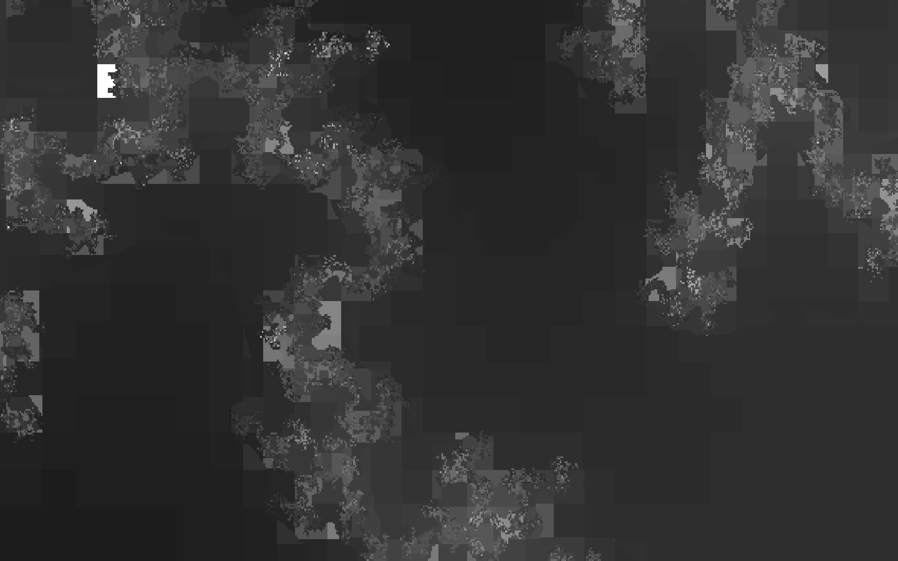

AlloSystem and allolib
At AlloSphere, a C++ framework called AlloSystem is used to create contents to be run in the sphere. It's graphics API is based on OpenGL 2. When I started working at AlloSphere Research Group, I wanted at least OpenGL 3.3 to utilize more modern features so I worked on a new version of the framework: allolib. Other changes include: Windows Visual Studio 2017 support, move from GLUT to GLFW for window creation, easier CMake build system, ImGUI integration, and etc..

